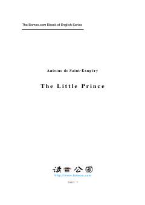

TLKichik shahzodaning o'zga sayyoralarga qilgan sayohati va hayot haqidagi falsafiy qarashlari.
Ushbu asar cho'lda halokatga uchragan uchuvchi va o'zga sayyoradan kelgan kichik shahzoda o'rtasidagi uchrashuv haqida hikoya qiladi. Kitob insoniy qadriyatlar, do'stlik va hayotning ma'nosi haqida chuqur falsafiy fikrlarni o'z ichiga oladi.